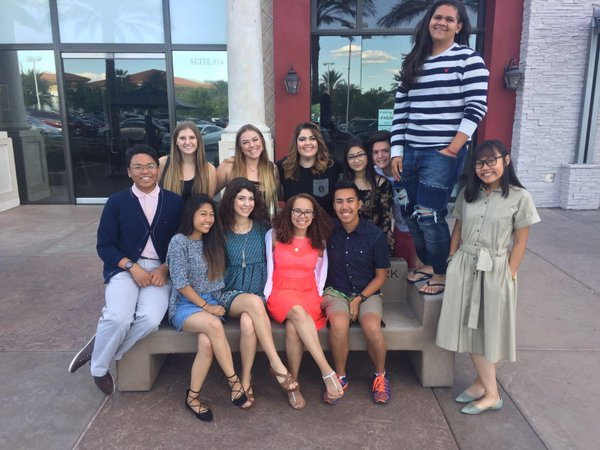
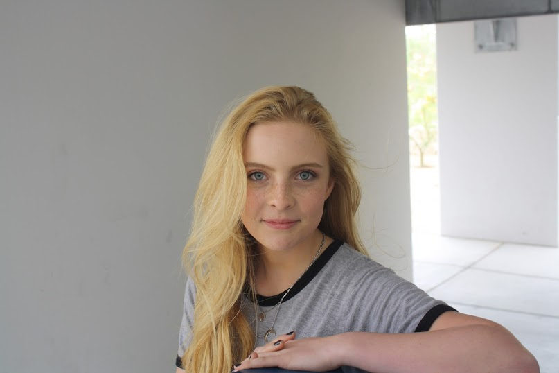
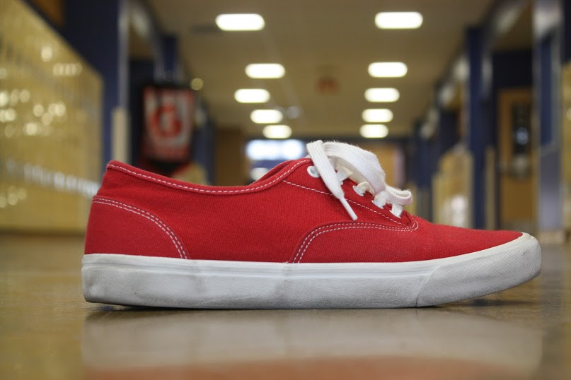

This is it. The final year of highschool, many different things happened this year. One of the major turning points of it was that I only took one web design class this year inturn I took photography and leadership, which I feel helped me overall as a person and as a student, but my skills in web design have fallen off in comparison to what they could've been. I found my passion this year and I learned that I want to persue brodcast and music.
Seniore capstones are very important at Southwest CTA. These projects take the entirety of our senior year to create and I got to work with two other individuals to create an amazing project that is used to help kids learn mathmatics. We spend from September to May on this project making it the best it could be and I am beyond proud with the end result. We got to present this project to the school and it was a good way for us all to show our unique skillsets in the world of web design.
One of the major changes that happened this year and that was a turning point in my life was becoming a part of the student council at Southwest. This class helped me in a multitude of ways whether it be learning how to think on the fly, managing my time with a planner, and overall become a better leader and student. We put on many different event this year such as dances, olympics, and even a version of coachella this year.
Another new thing I took on this year was a photo class. This class taught me a lot about how a camera works and how I see the world. This class also helped my writing skills because we would have to write about our photos and I learned so much about taking good photos and arranging them to look nice which is something I always had an interest in, but never persued.
 